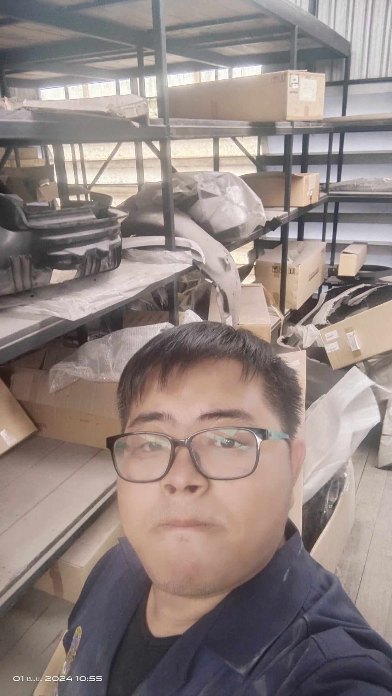
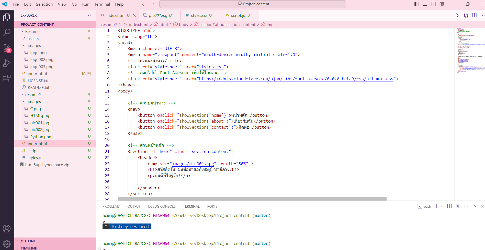

เกี่ยวกับฉัน
สวัสดีครับ ผมชื่อ นายอภิเชษฐ์ ทาสีลา (ชื่อเล่น ออม) อายุ 22 ปี
เกิดเมื่อวันที่ 10 สิงหาคม พ.ศ. 2545
ที่อยู่: 21 หมู่ 6 บ้านหนองเก็บชี ตำบลนาดี อำเภอเมือง จังหวัดอุดรธานี 41000
การศึกษา
ระดับอนุปริญญา
- มหาวิทยาลัยราชภัฏอุดรธานี (ตั้งแต่ปี 2022 ถึง ปัจจุบัน)
GPA: 2.88
ระดับประกาศนียบัตรวิชาชีพขั้นสูง
- วิทยาลัยอาชีวศึกษาอุดรธานี (ตั้งแต่ปี 2020 ถึง ปี 2022)
GPA: 3.95
ระดับมัธยมศึกษาตอนปลาย
- โรงเรียนอุดรพิชัยรักษ์พิทยา (ตั้งแต่ปี 2017 ถึง ปี 2020)
GPA: 3.00
ประสบการณ์ทำงาน
- ฝึกงานที่ T-Cars Service สาขา2 นาดี (ตั้งแต่วันที่ 1 เมษายน 2567 ถึง 15 มิถุนายน 2567)
ตำแหน่ง : นักศึกษาฝึกงาน

ทักษะ
- การเขียนโค้ดภาษา Python, C++ และ HTML

\n

\n
- การพัฒนาเว็ปไซต์

งานอดิเรก
เล่นเกม
ฟังเพลง
ถ่ายภาพ